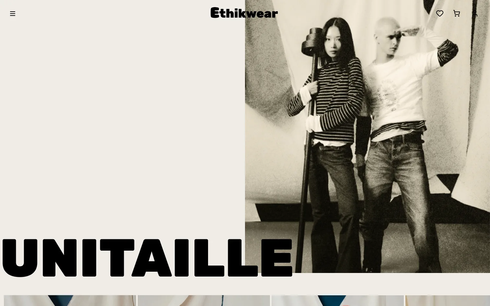
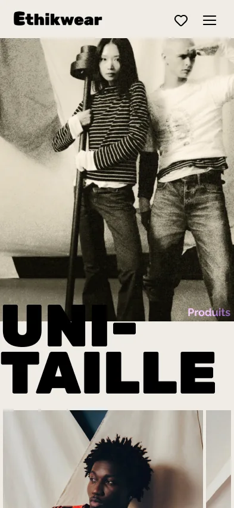
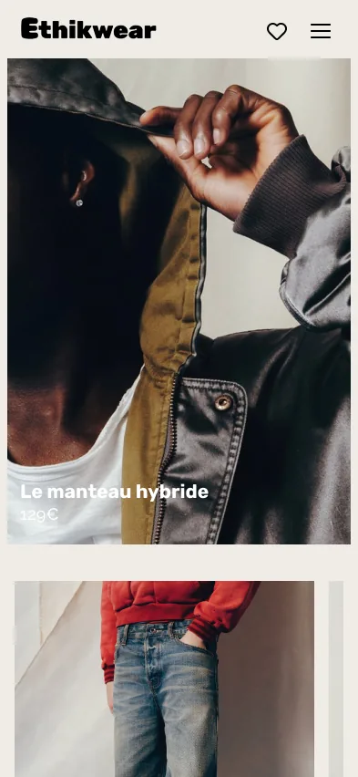
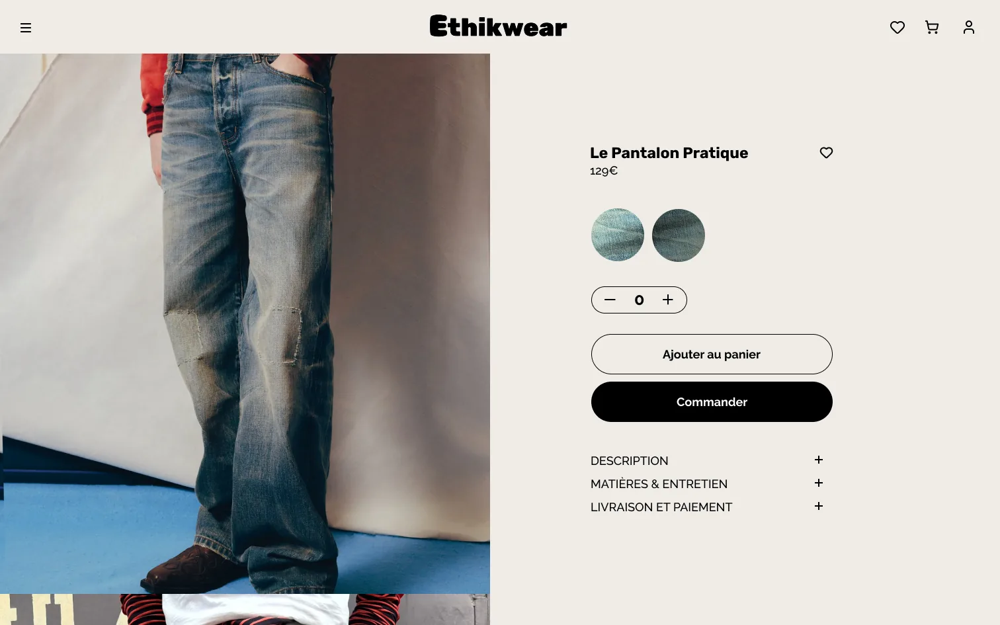
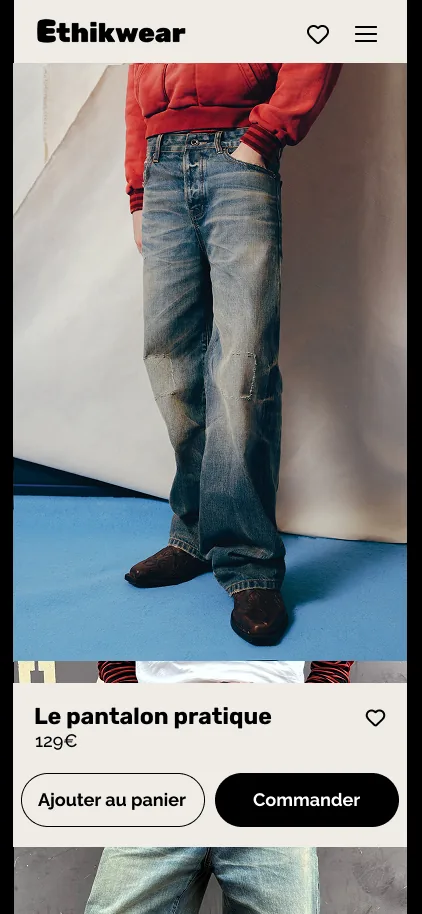
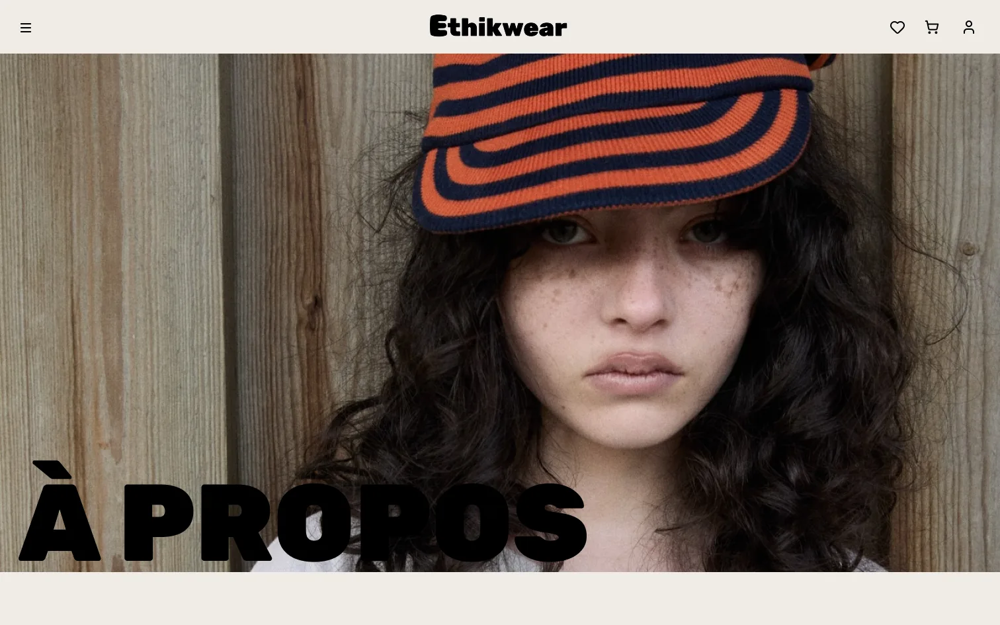
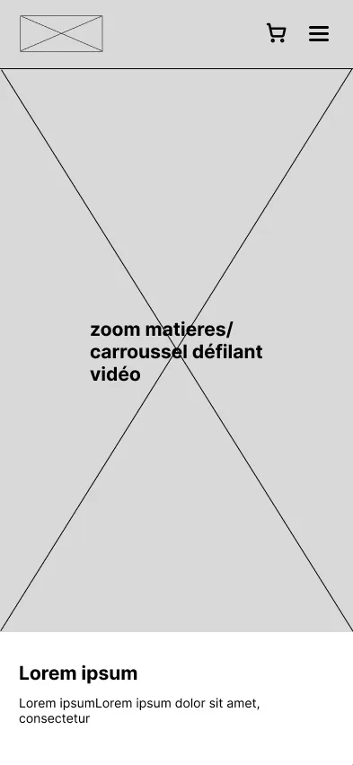

Site e-commerce, 2025. Projet de groupe de six mois à Ynov Bordeaux : wireframes, maquettes et prototype interactif. Figma.
Voir le prototypeEthikwear
Le projet
Une marque à créer. En première année de Bachelor, notre groupe devait créer une marque de mode responsable, de la stratégie jusqu'au site e-commerce. Notre parti pris : l'unitaille, une seule taille pour toutes les morphologies. J'ai participé à la réflexion sur la marque et à son identité visuelle, puis à la conception du site avec le groupe.
Du wireframe au prototype. On a posé le parcours d'achat en wireframes : accueil, listing produits, fiche produit, panier, À propos, chaque écran décliné en mobile. On l'a ensuite porté en maquettes puis en prototype interactif sur Figma, en desktop et en mobile.







Sur la fiche produit, les matières, l'entretien et la livraison sont juste à côté du prix.